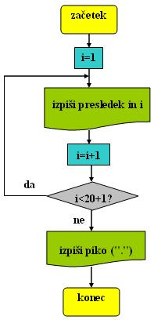
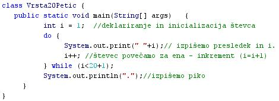
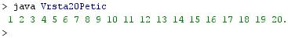

PREVAJALNIK IN PREVAJANJE
- Prevajalnik je raèunalniški program.
- Prevajalnik pretvori ali spremeni izvorno kodo programa, ki smo jo zapisali v programskem jeziku, v ciljno kodo, ki jo razume raèunalnik.
- Izvorno kodo želimo spremeniti v strojno ali ciljno kodo, ki jo razume raèunalnik zato, ker želimo izdelati izvršljivo datoteko.
- Izvršljiva datoteka je samostojen programèek, ki ga lahko zaženemo in ki izvede razliène naloge.
- Izvršljive datoteke prepoznamo po konènici ".exe".
- Konènica ".exe" je simbol za angleško besedo "executable", ki pomeni "izvršljiva".
- Prevajanje izvorne kode v strojno oziroma ciljno kodo, ki jo raèunalnik razume, je potrebno zato, ker je razvoj programskih jezikov privedel do tako imenovanih "višjih programskih jezikov" ali "programskih jezikov višje ravni".
- To so programski jeziki, ki so bolj podobni èloveški govorici in je zato programiranje v teh jezikih lažje.
- Programski jeziki so sèasoma postajali vedno bolj podobni èloveški govorici.
- Seveda je to pomenilo, da so bili vedno manj podobni strojni kodi, ki jo razumejo raèunalniki.
- Pokazala se je torej potreba za prevajanjem višjega programskega jezika v strojno kodo.
- Višji programski jeziki so se razvijali tudi zaradi vedno bolj zmogljive strojne opreme.
- Prevajanje izvorne kode programa izvedemo le enkrat.
- Rezultat prevajanja je samostojna izvršljiva datoteka.
- Samostojno izvršljivo datoteko zaženemo tako kot obièajne programe.
- Samostojne izvršljive datoteke ni veè potrebno prevajati.
- Primer:
- Besedni opis problema in rešitve.
- "Zapiši po vrsti števila od 1 do 20 v isti vrsti, med njimi pa naj bo en presledek": Vprašamo se, kaj vse bomo morali postoriti za rešitev problema in to opišemo v nekaj stavkih. Potek reševanja problema poskusimo premisliti èim bolj natanèno.
- Ker gre za ponavljanje, bomo izbrali zanko.
- Zaèetna vrednost števca zanke je 1.
- Izpiši presledek in vrednost števca.
- Poveèaj vrednost števca za 1.
- Èe bo števec manjši od 20+1, poveèaj števec za 1 ter ponavljaj izpisovanje presledka in števca.
- Èe števec ni manjši od 20+1, prekini zanko in izpiši še piko.
- Diagram poteka
- "Zapiši po vrsti števila od 1 do 20 v isti vrsti, med njimi pa naj bo en presledek":

VAJA 42:
- V okolju za pisanje izvorne kode v jeziku Java, za prevajanje in za interaktivno delo zapiši zgornji program "Vrsta20Petic". Pomagaj si s sliko.
- Kodo lahko tudi kopiraš iz te datoteke in jo prilepiš v okolje, v katerem pišeš programèke. Pozor: koda, ki jo boš kopiral/a, vsebuje eno, dve, tri ali štiri napake. Èe želiš, da bo program deloval, moraš napake odkriti in jih odpraviti.
- Izvorno kodo shrani pod imenom "ImePriimek42.java". ImePriimek je seveda tvoje lastno ime in priimek.
- Datoteko "ImePriimek42.java" prevedi.
- Prevedeno datoteko zaženi, preveri rezultat v interaktivnem oknu in poklièi profesorja, da vidi rezultat.
- Sam/a skonstruiraj diagram poteka v tej uèni enoti in ga nariši v zvezek. Pomagaj si z uèno enoto 37.
1. Vprašanja:
1. Kaj je prevajalnik?
2. Kakšno nalogo opravlja prevajalnik?
3. Kaj je izvršljiva datoteka?
4. Kako prepoznamo izvršljive datoteke po imenu?
5. Kaj je znaèilno za višje programske jezike?
6. Katero kodo "razume" raèunalnik?
7. Kaj je rezultat prevajanja?
8. Ali moramo prevajanje nekega programa izvesti veèkrat, èe ga želimo uporabljati, ali enkrat?
9. Katero zanko smo uporabili v primeru te uène enote?
10. Zapiši pogoj, ki mora biti izpolnjen, da se zanka v primeru te uène enote izvede.
11. Ali je programski jezik "Java" višji programski jezik ali je to strojni jezik? Utemelji svoj odgovor.
12. Ali je okolje za interaktivno delo s prgami v Javi "drJava" prevajalnik? Ali vsebuje to okolje prevajalnik? Utemelji svoj odgovor.
2. Zapiši od ene do pet kljuènih besed, ki povzemajo vsebino te uène enote.
3. Povezave do dodatnih informacij.
Prevajalniki v angleški razlièici Wikipedie.
Spletni priroènik proizvajalca programskega okolja Java. To je podjetje Sun.
|